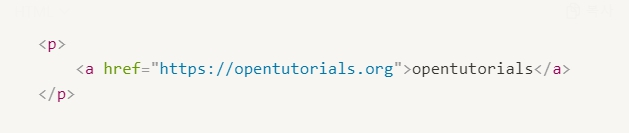
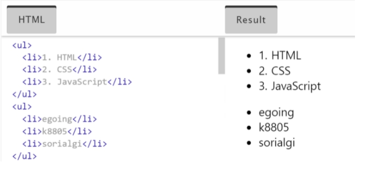

- strong, u, h1~h6
- br, p
- img, src, 크기조정 width
- li, ul
- 글의 구조 : title, head, body, html, !doctype html
- a, href, target
- 웹사이트 만들기
li, ul
부모 자식 관계
p태그가 a태그의 부모
a태그가 p태그의 자식

>> 직장의 상하관계처럼 필요에 따라 관계가 달라질 수 있음
고정된 관계인 태그들
- li : list, 목차 쓸 때 사용
- ul : unordered list목록끼리 구분하기 위한 경계
>> li 태그는 ul 태그를 필요로함, ul태그도 li태그가 있어야 존재
- ol : ordered list, 자동으로 항목 번호 나열
